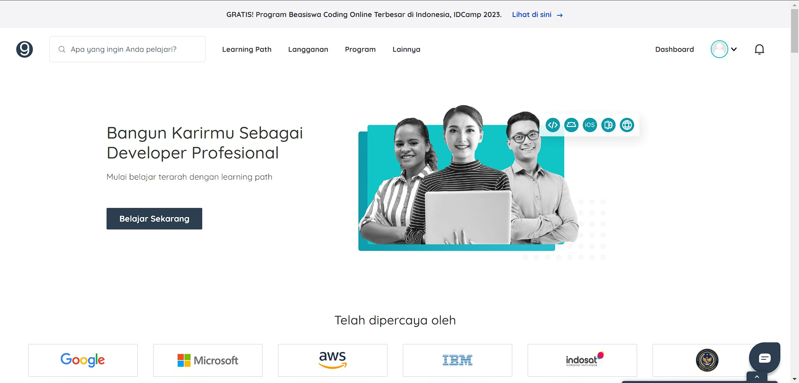
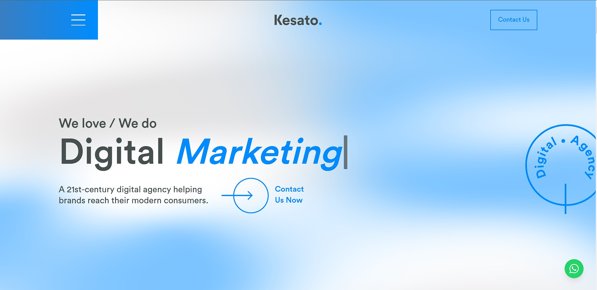
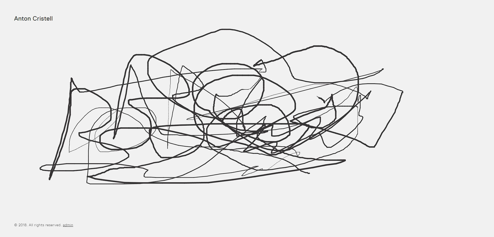
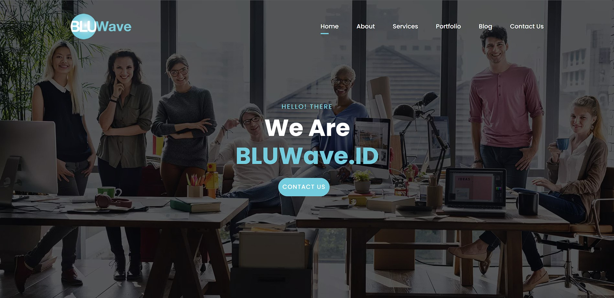

5 WEBSITE YANG MENARIK
Apakah Anda ingin mendapatkan klien baru atau memamerkan has karya terbaik
Anda? Anda bisa memanfaatkan website portofolio karena website ini akan
sangat berguna jika Anda seorang freelancer atau sedang mencari klien
untuk\proyek Anda. Website portofolio dapat mencakup apa saja seperti contoh
proyek, studi kasus, template desain web, atau bahkan aset berskala lebih kecil
seperti desain tipografi, logo, ilustrasi, dan sebagainya. Membuat website
portofolio yang unik dan menarik dapat menjadi investasi yang menjanjikan untuk
karier yang sukses masa depan. Berikut beberapa contoh website portofolio yang
dapat menarik perhatian calon klien Anda.
1. Dicoding

Situs Dicoding merupakan contoh situs Belajar yang lengkap dan
terstruktur. Dengan menggunakan menu dashboard yang ada di
halaman beranda, Anda dapat melihat Learning, Langganan,
Program dan Lainya.
Desain website terlihat minimalis. Meskipun ada banyak informasi di sana,
tetapi Anda tidak akan mengalami kesulitan untuk membacanya.
2. Kasato

Ingin situs web portofolio kasual namun profesional? Anda dapat melihat
contoh halaman portofolio Kesato. Kombinasi warna biru yang lebih kasual
dan hitam yang profesional pada halaman beranda memberikan kesan pertama
yang luar biasa.
Setiap karya Kesato bisa diklik untuk melihat informasi lebih detail. Dan
waktu loading website ini sangat cepat karena tampilannya yang ringan dan minimalis.
3. Anton Cristell

Saat Anda membuka situs web Anton Cristell, Anda akan melihat halaman putih kosong.
Tampilan awal seperti kanvas, tapi saat tangan Anda menggerakkan mouse, gambar
digital akan tercipta.
Desain dari contoh website portofolio ini sangat unik dan kreatif sehingga
akan membuat pengunjung ingin terus berinteraksi dengan website Anda.
Jika Anda mengeklik nama Anton Cristell di pojok kiri atas halaman, Anda akan
melihat dua opsi yang akan membawa Anda ke galeri karyanya atau biografi singkat
Anton. Situs web ini tidak hanya efektif, tetapi menavigasi dengan cara ini
dapat membuatnya lebih mudah dan nyaman bagi pengguna.
4. Bluwave

Anda tidak perlu mencari jauh-jauh untuk menemukan contoh website portofolio terbaik untuk
mendapatkan ide untuk Anda sendiri. Anda dapat menggunakan ide dari website perusahaan
pemasaran digital Indonesia yaitu BLUWave.
Dimulai dengan beranda, waktu yang Anda habiskan di website BLUWave akan menjadi waktu yang
menyenangkan dan tak terlupakan. Selain itu, para pengunjung website memiliki akses ke
beberapa halaman lainnya seperti about me, portofolio, blog, dan contact us.
Pengunjung juga akan dapat memperoleh informasi detail tentang berbagai topik yang berhubungan
dengan BLUWave. Hal ini menunjukkan bahwa akan lebih mudah bagi pengunjung untuk menemukan
informasi yang mereka butuhkan.
5. Keita Yamada

Website yang dibuat oleh Keita Yamada menyajikan penampilan yang sederhana dan tidak berantakan.
Ada tiga bagian dalam portofolionya yaitu halaman perkenalan dengan deskripsi singkat,
halaman yang mencantumkan proyek-proyeknya, dan halaman dengan informasi kontaknya.
Penggunaan tema terang (light) dan gelap (dark) pada website ini merupakan elemen desain yang unik
dan menarik. Dengan mengeklik kotak di sudut kiri bawah website, pengunjung dapat memilih tema
desain yang mereka sukai.